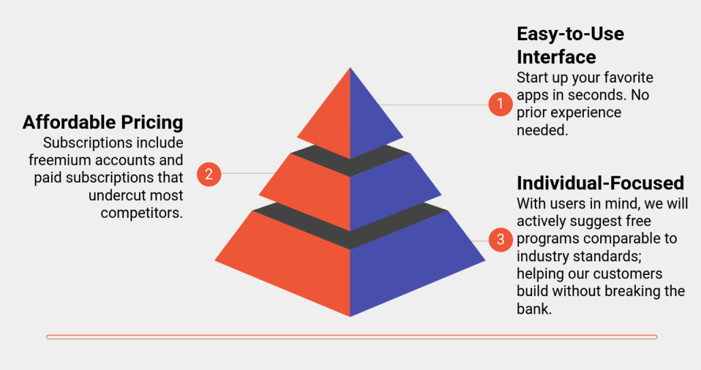
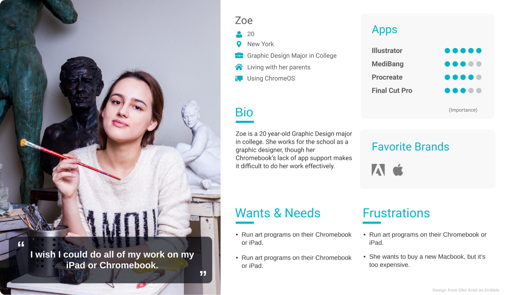
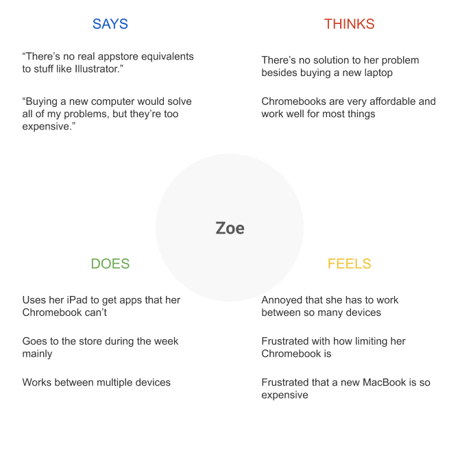

Rochester Greenovation
- Product Strategy
- UI/UX Design
- Frontend Development
Overview
Second Desk is a Desktop-As-A-Service product that
enables non-Windows users to stream Windows programs directly
through their browser.
This project is my response to the frustration that Chromebook
users (and even Linux magicians) feel when they can’t run
Windows apps on their preferred platform.
Note: project is a work-in-progress.
Role
Founder, Product Strategy, UX Research, Visual Design, Developer, Company Unicorn
Background
With the massive growth of Chromebooks in recent years, particularly in the field of education, more and
more students are using them to do their schoolwork. But after realizing how limiting a Chromebook’s app
library can be, a lot of them end up frustrated and with very few options.
I started Second Desk as a way to provide Chromebook users with a more robust computing experience,
without having to purchase a new Windows or Mac machine. We’re focusing on a niche target audience with
a specific problem to fix.
Product Strategy
Competitive Positioning Analysis
To understand our place in this growing market, we compared ourselves to a variety of Desktop-As-A-Service (DAAS) products ranging from enterprise-focused offerings to more consumer-grade ones. We found that there were very few companies who had products that both catered to individual consumers and offered a relatively low price point.

We found that there were very few companies who had products that both catered to individual consumers and offered a relatively low price point.
Product Offering
At the moment, we’re still in the customer discovery phase. Our current concept of an MVP is subject to change as we continue learning more about the problems about users face. That said, we believe a potential solution is to stream a remote Windows server and its applications directly through the user’s browser. This approach has both pros and cons when compared to a common existing solution:

After comparing these two approaches, we felt that ours did an excellent job of addressing our user’s issues, mainly a low price point and high ease-of-use. Because requiring a decent internet connection could be a challenge to some users, it will be an important area to test while we build our MVP.
UI/UX Design
Empathy Interviews
While conducting interviews, I wanted to understand common challenges our target audience faces while working on their computer(s). I created a basic list of interview questions:
- What is your occupation/major?
- How old are you?
- What is your current computer situation? Do you own one or do you share\lease?
- What do you regularly use it for? (school, work, personal; where do you use it; what apps do you typically run)
- What challenges do you face while using a computer? How does this make you feel?
- Is there any way in which you feel these challenges could be resolved? Is there anything stopping you from solving these challenges yourself?
Target participant characteristics:
- Ages 12-24
- High school and college students
- Mainly Chromebook users
- Include participants of different majors
- Include participants of different genders
User Personas
Empathy Maps
Mockups and Prototypes
Home page

Select a plan

Desktop

Development
MVP
There are two main components to our product: the website and the remote servers. To get a working MVP
going, we need to allow access to a remote desktop session directly through our website.
Our initial builds used a Windows 2019 EC2 instance from AWS and an in-browser remote desktop client
called Myrtille. With it, we could access both remote applications like Inkscape and the full desktop of
our server without ever needing a user download. We eventually constructed a React-based website that
could connect users to specific programs and even offered a small library of downloaded apps to run.
Future Improvements
While testing our MVP, there were several roadblocks that we kept facing:
- Our remote desktop software was designed for simple office programs, not graphics-intensive ones. Low stream quality and low FPS was sometimes an issue.
- The AWS instance lacked a dedicated GPU, bottlenecking the performance of some programs.
Finding new remote desktop software was our main prirority, so after researching the stacks behind cloud gaming services like Google Stadia (who excelled at remote app streaming), we found that a WebRTC-based approach looked the most promising. Althought, we are still in the process of looking for ways to improve performance on the server itself.
What I Learned
Going into this project, I had little familiarity with UX principles, server management, or coding for the web. I was the only product developer and designer working on it for a number of months, which forced me to learn how to do everything from the ground up. I’ve made a lot of progress since starting and I’m continuing to learn more as the project keeps evolving.